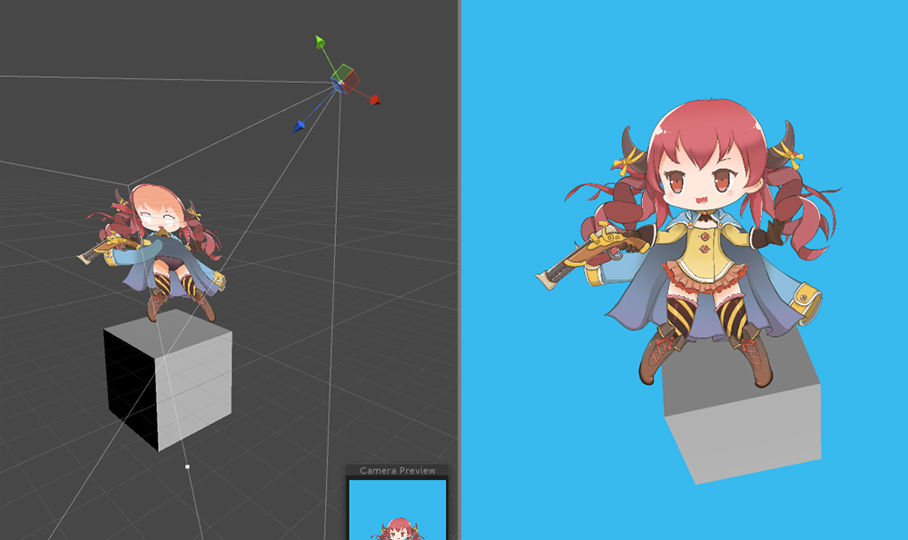

AnyPortrait > 메뉴얼 > 빌보드와 Perspective 카메라
빌보드와 Perspective 카메라
1.1.0

AnyPortrait는 기본적으로 2D 게임을 위한 에디터입니다.
그렇지만 3D 배경에 2D 캐릭터를 등장시키는 등의 다양한 게임 방식에도 사용될 수 있도록 지원하고 있습니다.
이 페이지에서는 3D 게임에서 사용되는 Perspective 카메라에서 AnyPortrait로 만든 캐릭터를 렌더링하는 방법과, 이를 위한 빌보드를 설정하는 방법을 다룹니다.
이 기능을 활용한 "Pirate Game 3D" 데모를 확인해보는 것도 좋습니다.
Perspective 카메라 : 원근감이 있는 카메라입니다. 그 반대는 Orthographic 방식입니다.
빌보드(Billboard) : 항상 카메라를 정면으로 바라보는 렌더링 방식이며, 주로 이펙트에서 사용됩니다.

(1) Bake 다이얼로그를 엽니다.
(2) Setting 탭에서 Billboard 설정을 변경합니다.
- None : 빌보드를 사용하지 않습니다. Perspective 카메라를 지원하지 않습니다.
- Billboard : 빌보드를 사용합니다.
- Billboard with fixed Up Vector : 빌보드를 사용하되, World 좌표계의 Up (+Y) 방향은 유지합니다.
Perspective 카메라를 위한 옵션은 별도로 없습니다.
Billboard 설정이 None이 아닌 경우 렌더링 되는 카메라의 방식을 인식하여 Perspective 카메라도 자동으로 지원됩니다.
(Orthographic 카메라는 빌보드 옵션과 관계없이 모두 지원됩니다.)
주의
Billboard 방식을 사용할 경우, 카메라의 "Camera.transparencySortMode" 속성이 "TransparencySortMode.Orthographic"로 강제로 변경됩니다.

빌보드 설정이 켜지면 게임이 실행될 때 "렌더링을 하는 카메라"를 자동으로 찾고,
그 방향으로 계속 바라보게 됩니다.
카메라가 Orthographic인지 Perspective인지 자동으로 인식한 후, 카메라에 맞게 형태가 보정됩니다.

빌보드 설정 : None
카메라를 바라보지 않으며, 순서대로 제대로 렌더링되지 않습니다.

빌보드 설정 : Billboard
항상 카메라를 바라봅니다.
Perspective라도 정상적으로 렌더링이 됩니다.
카메라가 기울어져도 항상 똑바로 렌더링됩니다.

빌보드 설정 : Billboard with fixed Up Vector
항상 카메라를 바라봅니다.
Perspective라도 정상적으로 렌더링이 됩니다.
Billboard 방식과 다르게 World 좌표계의 Y 방향은 고정되므로, 카메라가 기울어지는 만큼 반대로 기울어져서 렌더링됩니다.